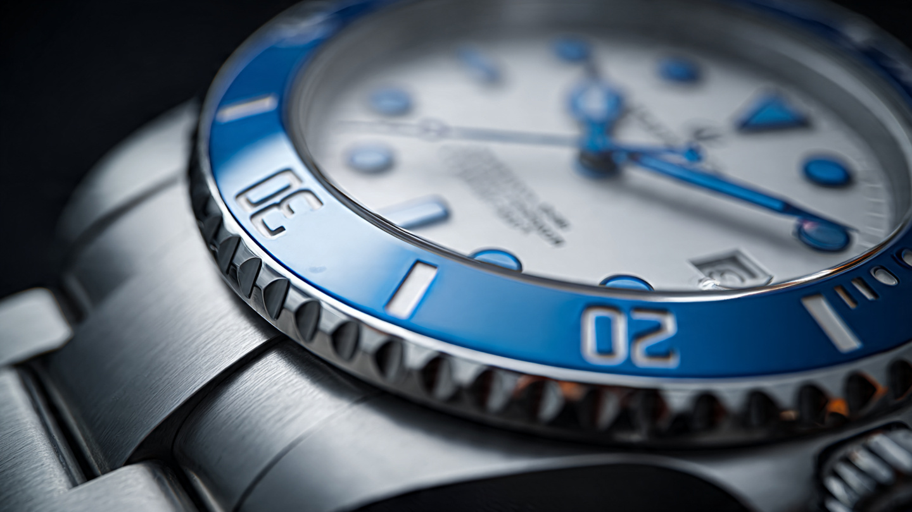

Subtract to Add: How Rolex Rebuilt Its Most Complicated Watch by Removing Its Most Complicated Part

For 17 years, from 2007 to 2024, the Yacht-Master II was the only Rolex in which the bezel was mechanically linked to the movement. That system, Ring Command, used the bezel as an input device: rotate it 90 degrees counterclockwise to unlock a programming mode, set the countdown duration via the crown, return the bezel to its home position. It was ingenious, specific, and complex enough that some owners never figured out how to use it. In 2024, the entire Yacht-Master II line was quietly discontinued. For two years, the regatta chronograph simply did not exist in the Rolex catalog. At Watches and Wonders 2026 in Geneva, it returned. Without Ring Command. With a new movement. With a seconds hand that runs backward. And somehow, with fewer mechanical parts, it does more.
What Ring Command Was
Understanding what Rolex removed requires understanding what Ring Command actually did, because most descriptions of the system gloss over the mechanical reality. In a conventional watch, the bezel is decorative or, at best, a passive timing reference. You twist it, and it clicks. Nothing inside the movement notices. Ring Command was different. It was one of the very few production watch bezels that interfaced directly with the movement mechanism through an intermediate ring system beneath the bezel that engaged and disengaged a coupling clutch inside the case. When you rotated the bezel 90 degrees to the left, you physically activated a programming pathway.
Once in that mode, rotating the crown advanced a dedicated triangular hand along a 1-to-10 minute scale printed across the center of the dial. Setting it to 5, for example, programmed a five-minute countdown. You then returned the bezel to its home position, screwed down the crown, and pressed the upper pusher to begin. Pressing the lower pusher during an active countdown triggered a flyback-style snap to the nearest full minute, a mechanical memory function that stored the initial countdown value so that a reset would return the triangular hand to the originally programmed duration. It was, from a mechanical engineering perspective, a genuine achievement. It was also, from a user-interface perspective, a procedure dense enough to require a manual.
Ring Command required dedicated mechanical components inside the case: intermediate coupling rings, detent springs, positional locks, and a bezel-to-movement transmission path that introduced additional points of potential wear and required precise alignment during assembly. It also meant the bezel was not available for conventional elapsed-time marking. You could countdown, or you could not. On-the-fly adjustment during an active countdown was limited to the flyback snap. If race control changed the starting sequence from seven minutes to five, you stopped, reset, reprogrammed through the bezel, and started again. For a sailor approaching a start line in a cross-tide with 20 knots of breeze, that is not a minor inconvenience.
What Replaced It
In the 2026 Yacht-Master II, references 126680 in Oystersteel and 126688 in 18-carat yellow gold, Ring Command is gone entirely. Its blue Cerachrom bezel is now a standard bi-directional timing bezel with conventional 60-minute graduations, identical in function to any diver or GMT bezel. Programming the regatta countdown happens through the pushers. One press of the lower pusher at 4 o’clock adds one minute to the countdown, indicated by a fourth hand tracking a 0-to-10 scale on a newly profiled rehaut flange at the dial’s outer edge. Press it five times and you have a five-minute countdown. Press the upper pusher at 2 o’clock and the countdown begins.
Here is where the engineering becomes interesting. If the countdown is running and race control fires a signal that does not match your programmed sequence, pressing the lower pusher during the active count immediately resets the seconds and minutes to the nearest full minute. No stopping. No bezel manipulation. No crown adjustment. One press, mid-countdown, while the boat is moving, while the wind is shifting, while you are trying to cross a line that is itself an imaginary coordinate defined by two marks and a committee boat.
Rolex traded a mechanically impressive input method for a mechanically simpler one, and gained a capability the old system could not support. That trade is the entire story of the 2026 Yacht-Master II.
Running Backward
When you start the countdown, the central seconds hand begins sweeping counterclockwise. This is not a software trick or a dial label illusion. It is a mechanical seconds hand running in the reverse direction, driven by the caliber 4162’s gear train through what Rolex describes as a dedicated counterclockwise display. Counterclockwise sweep during a countdown is intuitive because it mirrors the visual metaphor of draining time: the hand moves toward zero rather than away from it. In the final 30 seconds before a regatta start, legibility is not optional. Reading a clockwise hand against a reversed countdown scale requires mental subtraction. Reading a counterclockwise hand against a naturally descending scale does not.
After the countdown reaches zero, the hand does not stop. It continues spinning counterclockwise indefinitely until the function is manually reset, a small mechanical flourish that serves no operational purpose but confirms the movement is alive and the function has completed rather than stalled. It is also, by all accounts, genuinely entertaining to watch.
Caliber 4162 and the Chronergy Problem
Rolex’s caliber 4162 is an automatic chronograph with a column-wheel switching mechanism and vertical clutch engagement. Column wheels are the traditional high-end chronograph switching method, using a rotating pillar structure to engage and disengage the chronograph train. Vertical clutches, which Rolex began using in the caliber 4130 (Daytona), eliminate the hand-jump at start that horizontal clutches produce, because the chronograph wheel remains in continuous friction contact with the going train. Combined, the column wheel and vertical clutch produce a chronograph that starts without hand stutter and resets with precision.
Running at 28,800 vibrations per hour, the 4162 packs 47 jewels and delivers 72 hours of power reserve. A Parachrom hairspring, Rolex’s proprietary niobium-zirconium alloy, provides paramagnetic resistance and a thermal coefficient of expansion roughly ten times lower than conventional Nivarox, meaning its rate stability across temperature changes is measurably superior. A Rolex overcoil, the brand’s implementation of the Breguet terminal curve, improves concentricity of the hairspring’s breathing during oscillation, reducing positional timing errors. Four gold Microstella nuts on the balance wheel rim provide high-precision regulation by altering the moment of inertia without touching the hairspring, and Paraflex shock absorbers, Rolex’s proprietary anti-shock system, improve energy absorption by approximately 50 percent over the Incabloc system it replaced.
All of this sits beneath the Chronergy escapement, and the Chronergy escapement is where the story turns from Geneva to Suwa.
A Patent from 1971
In the late 1960s, the Swiss and Japanese were locked in what would become the last great observatory chronometer competition. Movements were running faster, beat frequencies climbing from the standard 18,000 to 28,800 and even 36,000 vibrations per hour in pursuit of greater timing stability through higher balance inertia. An engineer named Kenji Abe at Suwa Seikosha, one of Seiko’s operating divisions, noticed something that the Swiss establishment had missed or ignored: as beat frequencies rose, the transmission efficiency of the conventional lever escapement dropped. At 18,000 to 21,600 beats per hour, the standard club-tooth geometry transmitted roughly 40 percent of the energy from the escape wheel to the balance. At 28,800 and above, that number fell to approximately 30 percent.
Abe performed a first-principles static analysis of the contact geometry between escape wheel teeth and pallet jewels, examining the friction effects on the balance of forces at both impulse phases. His most significant finding contradicted nearly every horological textbook written since Leopold Defossez’s 1950 reference and Claudius Saunier’s 1887 treatise: the highest transmission efficiency came from escape wheel teeth whose face length equaled or doubled the length of the pallet, rather than the conventional proportion where the tooth was half to four-fifths the pallet length. Wider teeth. Thinner pallets. Exactly the opposite of accepted wisdom.
Abe filed United States patent US3628327A in 1970 and was granted it in 1971. His findings arrived too late for the observatory trials, which were canceled after 1968 when Japanese entries swept the results. Quartz arrived immediately afterward, and nobody in the mechanical watch industry had reason to pursue incremental escapement efficiency when an entirely new timekeeping paradigm was rendering the whole question moot. Abe’s work was effectively buried for five decades.
Rolex engineers Raphael Cettour-Baron and Alexandre Chiuve rediscovered and extended Abe’s research, citing his patent in their own work. Where Abe performed a static force analysis, Cettour-Baron and Chiuve added dynamic modeling and high-frame-rate imaging to observe the escapement in motion, accounting for the inertia of both the escape wheel and the lever during impulse. Rolex’s version goes further than Abe’s original by incorporating two distinct impulse planes on each escape wheel tooth, rather than the single-geometry approach Abe proposed. The resulting escapement, covered by 14 patents and branded Chronergy, improves energy transmission efficiency by approximately 15 percent, enough to extend a 48-hour power reserve to 70-plus hours without increasing mainspring torque or reducing balance amplitude.
It is worth sitting with the irony. Seiko’s research from 1971, conducted during its campaign to prove Japanese mechanical watchmaking could match the Swiss, was ultimately adopted by the most Swiss of Swiss brands. Abe’s geometry never reached production at Seiko or Grand Seiko, where modern Hi-Beat movements still use conventional thin-tooth wide-pallet configurations with lithographically produced nickel-phosphorus components optimized for low inertia rather than improved energy transfer. Rolex took a competitor’s abandoned homework, verified it with modern tools, and made it the foundation of every current-production Rolex movement.
A Brief History of Counting Backward
Regatta timers are old. Sailboat racing has used flying starts since the late 19th century: a warning signal marks the beginning of a countdown, boats jockey for position, and the race begins when the final signal fires. Crossing the line too early means returning and re-crossing. Crossing too late means starting behind. Getting it right means knowing exactly how many minutes and seconds remain. A standard chronograph, which counts up from zero, requires the sailor to do arithmetic while helming a boat in close-quarters maneuvering. Regatta chronographs, which count down from a preset value, eliminate that arithmetic.
Heuer built early regatta modules in the 1950s, integrating colored countdown sectors into its Mareographe line. Omega produced the Seamaster Regatta in the late 1960s with a five-minute countdown and color-coded minute markers. Memosail built dedicated regatta chronographs through the 1970s and 1980s. Panerai, Breguet, and Bremont have all produced regatta-specific models. But from 2007 to 2024, the Yacht-Master II stood apart in one respect: it was the only regatta chronograph with a fully programmable countdown from 1 to 10 minutes, set through a bezel-movement interface, produced by a major manufacture. Its discontinuation in 2024 removed that entirely from the market.
With the 2026 generation, Rolex brought the programmability back and added something none of its predecessors offered: that mid-countdown synchronization via the lower pusher, which solves the persistent real-world problem of race committees adjusting their sequences. Competitive sailing is not a controlled environment. Starts get postponed, general recalls happen, and the countdown your watch was set to may no longer match the countdown the committee is broadcasting. A regatta timer that cannot resynchronize without a full stop and reset is a regatta timer that loses its utility exactly when its utility matters most.
44 Millimeters of Opinion
At 44 mm wide and 13.9 mm thick, the 2026 Yacht-Master II is marginally slimmer than its predecessor, which ran approximately 14.4 mm. Water resistance remains 100 meters. Both the Oystersteel and yellow gold versions use broader Oyster bracelets with polished center links, slimmer Oysterlock clasps, and the Easylink 5 mm comfort extension. Applied hour markers now carry Cerachrom inserts and follow a maxi-style design derived from the Submariner, replacing the previous generation’s more ornate indices. A matte white lacquer dial replaces the glossy finish. All of these are legibility-first choices that prioritize reading the countdown at a glance over displaying the case number on a dealer’s shelf.
Superlative Chronometer certification guarantees accuracy to -2/+2 seconds per day after casing, twice the tolerance of COSC alone, and Rolex tests this with the complete watch assembled rather than the bare movement. Pricing starts at $20,300 for the Oystersteel 126680 and $57,800 for the 18-carat yellow gold 126688.
What Subtraction Teaches
Engineering culture tends to celebrate addition. More complications, more materials, more features stacked on top of each other until the spec sheet reads like a grocery receipt. Rolex, which normally builds by accumulation, season after season adding Cerachrom bezels and Chromalight lume and Paraflex absorbers and Oysterflex bracelets to existing platforms, did something structurally different with the Yacht-Master II. It removed the single most mechanically distinctive feature the watch ever had, the feature that differentiated it from every other Rolex and every other regatta chronograph, and built something measurably better in its absence.
Ring Command was a mechanical achievement. It was also an interface bottleneck. Programming through the bezel was slow, unintuitive for many users, and incompatible with the mid-countdown adjustment that competitive sailing actually demands. Replacing it with two pushers and a rehaut scale freed the bezel for conventional elapsed-time use, simplified the movement’s internal architecture, reduced potential points of servicing difficulty, and introduced a feature set that the old system physically could not support. Fewer parts. More capability. A lower case profile. A counterclockwise seconds hand that makes the final 30 seconds of a countdown legible without mental subtraction.
Inside the 4162, a Japanese engineer’s forgotten patent from 1971 now drives the escapement of every current Rolex, an efficiency gain discovered during the last mechanical chronometer competition before quartz rendered the entire discipline temporarily irrelevant. Abe was trying to beat the Swiss. The Swiss ended up using his work. It took 50 years, a quartz crisis, a mechanical renaissance, and two Rolex engineers with access to high-speed cameras to close the loop.
None of this makes the Yacht-Master II a good value. At $20,300 for a steel watch with 100 meters of water resistance, it costs more than a Tudor Pelagos FXD and an Omega Seamaster Aqua Terra combined. What it is, instead, is a rare example of subtractive engineering at a company that almost never subtracts, and the resulting watch is functionally superior to the version that had more parts. That is an engineering argument worth paying attention to, regardless of the number on the price tag.
Sources
- Hodinkee, “Introducing: The Rolex Yacht-Master II Returns With A New Movement In Steel And Yellow Gold (Ref. 126680 & 126688),” April 2026, comprehensive overview of new caliber 4162 and pusher-driven countdown interface.
- Monochrome Watches, “In-Depth: The New Generation of Rolex Yacht-Master II Reference 126680 & 126688,” April 2026, detailed comparison of old and new movement architectures.
- SJX Watches, “In-Depth: The Rolex Chronergy System,” May 2021, technical analysis of the Chronergy escapement, Kenji Abe’s 1971 Seiko patent, and the geometry of energy transmission efficiency.
- 5D Watches Blog, “Rolex Yacht-Master II 126680: Best Mechanical Value of 2026,” full specification comparison table between caliber 4161 and 4162 generations.
- Bob’s Watches, “Rolex Bezels: How to Use the Yacht-Master II Bezel,” step-by-step Ring Command programming procedure for the previous-generation Yacht-Master II.
- Gear Patrol, “The 13 Most Important New Rolex Watches of 2026,” April 2026, context on the Watches and Wonders 2026 releases including YM-II redesign.
- Fratello Watches, “Introducing: The New Rolex Yacht-Master II 126680 and 126688,” April 2026, pusher-based UI overview and pricing details.
- Time and Tide Watches, “Rolex Yacht-Master II ref. 126680 & 126688,” April 2026, hands-on coverage of updated case, bracelet, and bi-directional bezel.
- United States Patent US3628327A, “Clubtooth Lever Escapement,” Kenji Abe, Suwa Seikosha (Seiko), filed 1970, granted 1971.